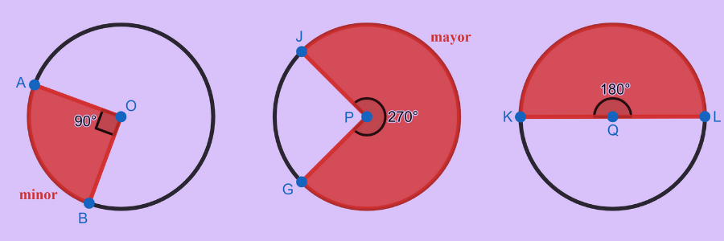
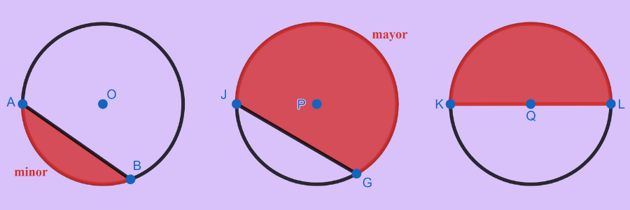

Dalam bahasan ini kata unsur-unsur lingkaran adalah istilah yang terkait dengan lingkaran. Unsur lingkaran yang berupa luasan yaitu juring dan tembereng.
 |
Mari Mengamati |
Perhatikan bagian yang berwarna merah pada gambar 10 dan 11 di bawah, serta ciri-ciri dari setiap unsur berikut!
Juring
Amatilah gambar 10 di bawah ini!
Dari pengamatan di atas diperoleh Ciri-ciri dari juring, yaitu:
Tembereng
Amatilah gambar 11 di bawah ini!
Dari pengamatan di atas diperoleh Ciri-ciri dari tembereng, yaitu:
Keterangan: untuk istilah busur, juring, tembereng, maupun sudut, jika tidak disebutkan secara spesifik minor atau mayor, maka disepakati minor.
 |
Mari Menanya |
Bagaimanakah cara yang harus dilakukan untuk menemukan besar sudut pusat \[YCZ\] (\[m\angle YCZ\]) dan besar sudut pusat \[WCX\] (\[m\angle WCX\]) berdasarkan gambar di bawah ini.

 |
Alternatif Pemecahan Masalah |
Untuk menyelesaikan permasalahan di atas lakukan prosedur berikut:
Langkah 1
Perhatikan besar sudut yang diketahui:
\[Besar\,\,sudut\,\,setengah\,\,lingkaran =\] \[^{\circ}\]
\[m\angle VCY\,\,dan\,\,m\angle WCY\,\,merupakan\,\,sudut\,\,siku-siku\,\,yaitu\,\] \[^{\circ}\]
\[m\angle VCX=\] \[^{\circ}\]
Langkah 2
Menyelesaikan:
m∠YCZ
\[m\angle YCZ=90^{\circ}-m\angle WCZ\]
\[m\angle YCZ=90^{\circ}-\,\] \[^{\circ}\]
\[m\angle YCZ=\,\] \[^{\circ}\]
m∠WCX
\[m\angle WCX=180^{\circ}-m\angle VCX\]
\[m\angle WCX=180^{\circ}-\,\] \[^{\circ}\]
\[m\angle WCX=\,\] \[^{\circ}\]
 |
Mari Mencoba |


Perhatikan gambar di bawah ini.

Manakah yang merupakan daerah juring dan tembereng, berdasarkan pengamatan yang sudah kalian lakukan sebelumnya. Kemudian tentukan \[m\angle DOE\].
| Daerah Juring yang berukuran \[90^{\circ}\] , |
| Daerah Tembereng Minor , |
| \[m\angle DOE\] ° |

 dan
dan  untuk mengganti ke nomor soal selanjutnya
untuk mengganti ke nomor soal selanjutnyaBerdasarkan gambar di bawah, tentukan:

a. Nilai \[x\], °
Berdasarkan gambar di bawah, tentukan:
b. \[m\angle IGE\], °
Berdasarkan gambar di bawah, tentukan:
c. \[m\angle EGF\]. °